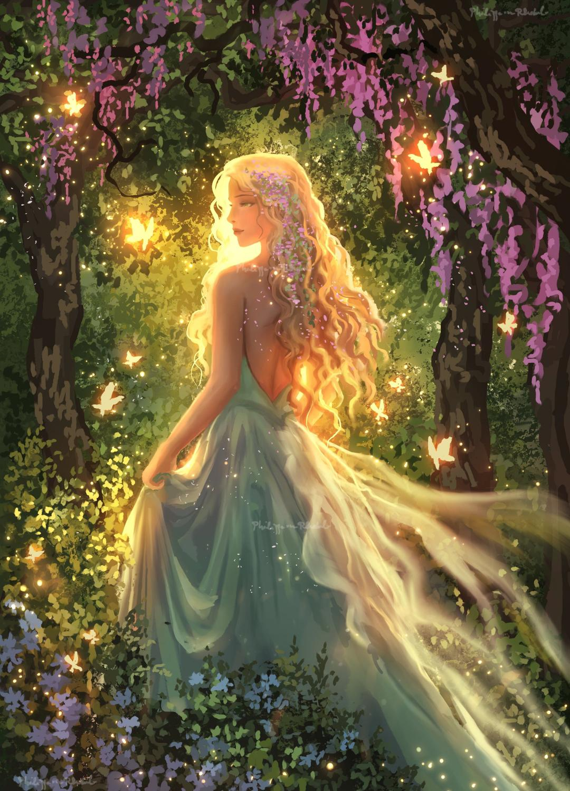
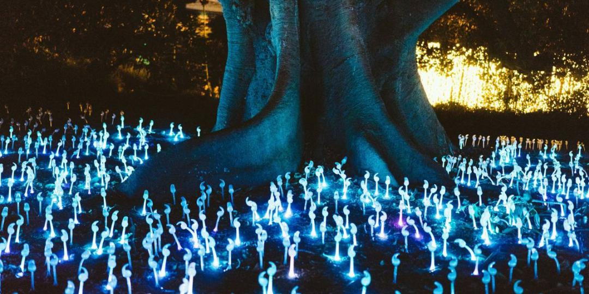
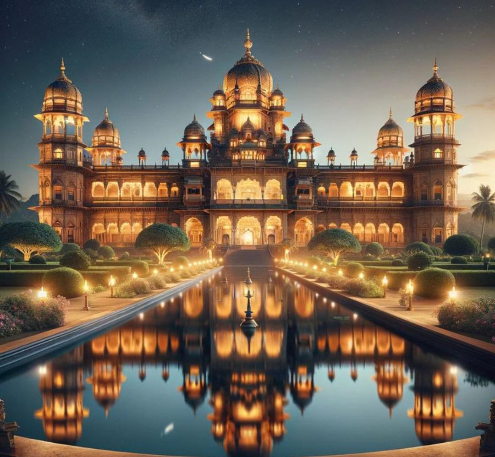
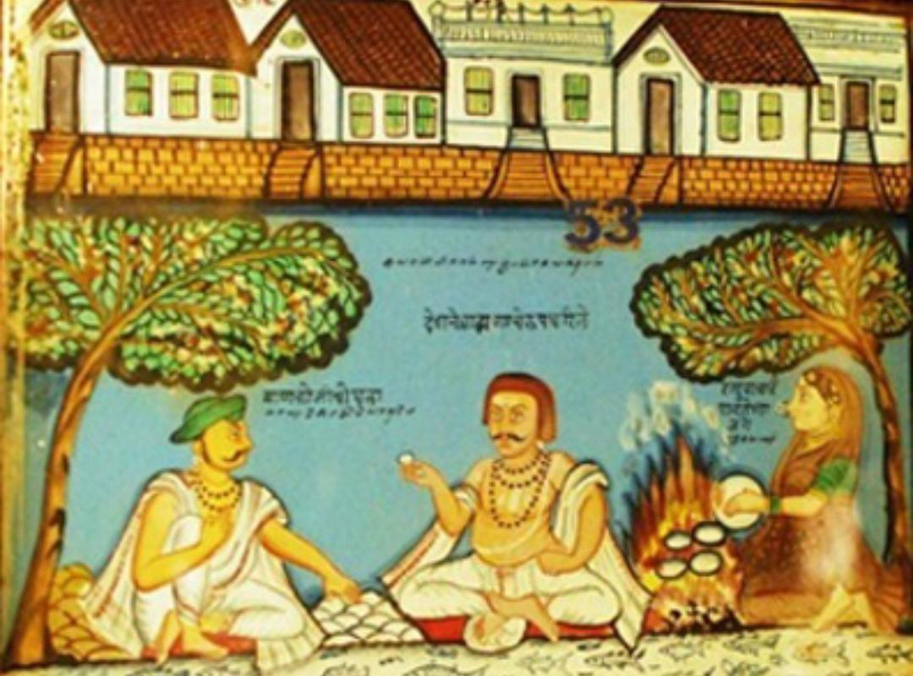
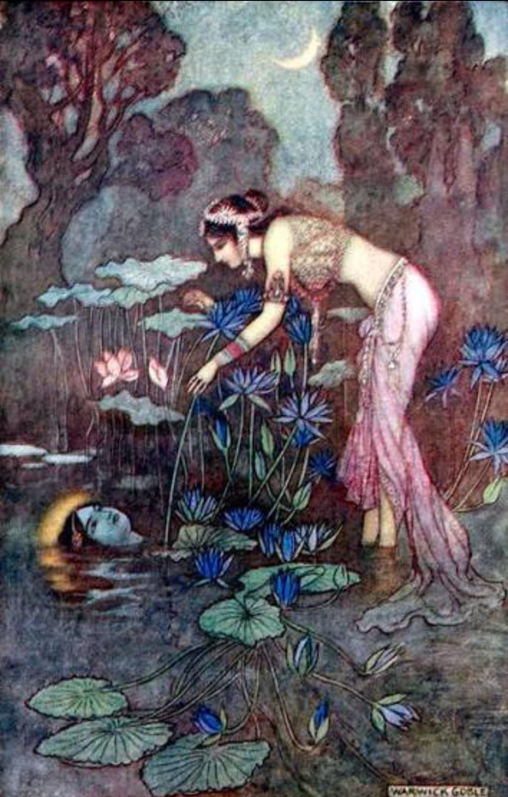

प्रकरण ५: परीकथा आणि अद्भुतकथा
सादरकर्ती: [Roommate's Name]
परीकथेची लक्षणे क्रोपेंने वर्णिलेली आपण पहिल्या प्रकरणांत पाहिलीच आहेत. तीच गृहीत धरून भारतीय परीकथांच्या गोतवळ्याची छाननी आपल्याला या प्रकरणांत करायची आहे.

चित्र १: ऐतिहासिक वारसा आणि सांस्कृतिक पार्श्वभूमीभारतीय कथावाङ्मयाची प्राचीन परंपरा आणि भारतीय धार्मिक व वाङ्मयीन प्रयोगांची अखंडितता पाहिल्यास, ऐतिहासिक पर्यायांना भारतीय परंपरेंत किती महत्त्व आहे हे सहज कळून येतें.
"ज्या मानानें देशाची संस्कृति पुरातन, प्रगल्भ व साहित्यसंपन्न त्या मानानें त्या देशांत अद्भुत कथांचा आढळ समृद्ध व बहुढंगी असतो."

चित्र २: भारतीय परीकथांमधील अद्भुत विश्वभारतीय अद्भुत कथांतल्या प्राचीनतम अतिमानवी योनि यक्ष, गंधर्व, किन्नर, गुह्यक, राक्षस, विद्याधर व सर्प यांच्या आहेत.

चित्र ३: प्राचीन शिल्पांमधील यक्ष आणि गंधर्व प्रतिमाजैन दिगंबर पंथातील तीर्थंकरांचे रक्षक यक्ष—ऋषभाचा गोमुख आणि पार्श्वनाथाची पद्मावती हे महत्त्वाचे पैलू आहेत.

चित्र ४: ऐतिहासिक दंतकथा आणि स्थळ-पुराण
चित्र ५: लोकसाहित्यातील सांस्कृतिक वारसा